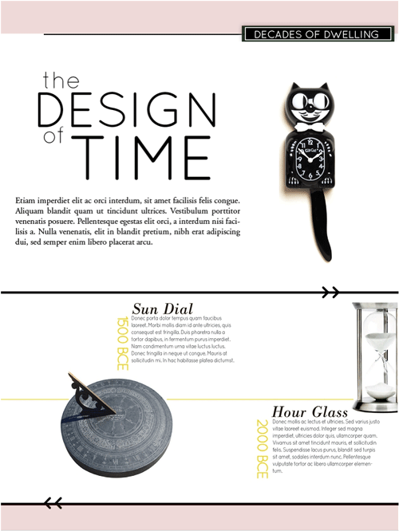
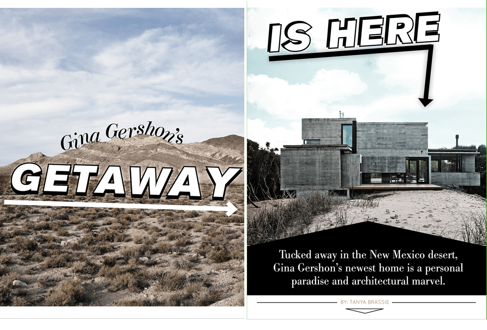
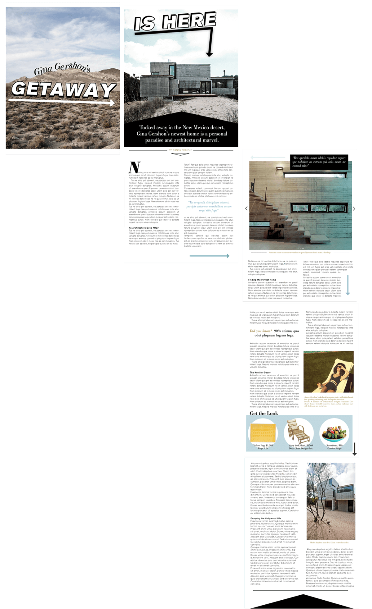

Imagine that it's the year 2025 and Dwell magazine has evolved! This project involved re-designing Dwell for potential future readers and consists of three cover designs, two font of the book layouts and one feature.
The re-design anticipates increased consumption of digital magazines by tablet users and uses the digital medium to engage readers in ways traditional print magazines cannot. For instance, the digital Dwell introduces motion to the reading experience! Instead of one gesture to navigate through the magazine (the flipping of the page), the digital reader will traverse the content by tapping and sliding to reveal pages and information. The digital version also allows for the easy showing/hiding of details, giving the users control over how much information they wish to see about various products in the magazine.
The cover aesthetic has also been refreshed. Although Dwell covers sport a contemporary look, they're often cluttered and too busy. The re-design strives for a more refined, deliberate and balanced look. The new copy has a heightened self-awareness and is often playful. Cover subjects are also sometimes unexpected.
This reoccurring front of the book piece called "Decades of Dwelling" examines the common objects we decorate our homes with and their evolution through time. Here the topic is clocks. Users can swipe horizontally on the timeline to view a history of timekeeping technology.
"The New Old" is yet another front of the book piece intended to showcase new twists on household staples such as faucets, doorknobs, and in this case, bathtubs. Users can swipe through images of similar style staples and see purchasing information.
A feature article! For this issue Dwell held a make-believe interview with Gina Gershon to talk about her newly purchased desert oasis. I wanted the spread to be dramatic, engaging and slightly mysterious to reinforce the remoteness of Gina's home. To enter the article, I wanted readers to feel like they were on a map quest. Initially, user's see "Gina Gershon's Getaway" amidst the a desolate desert image--to set the scene--and are encouraged to swipe right with the use of a giant arrow. The second page features another arrow pointing to Gina's home (destination reached!) and continues the sentence from the first page.
Pictured below is the article in its entirely, laid out to indicate how users travel through the content.
 